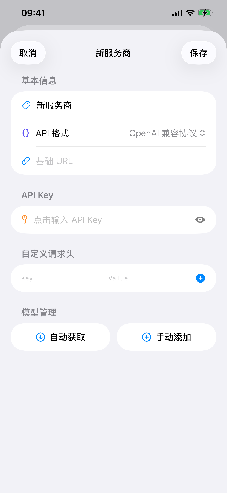
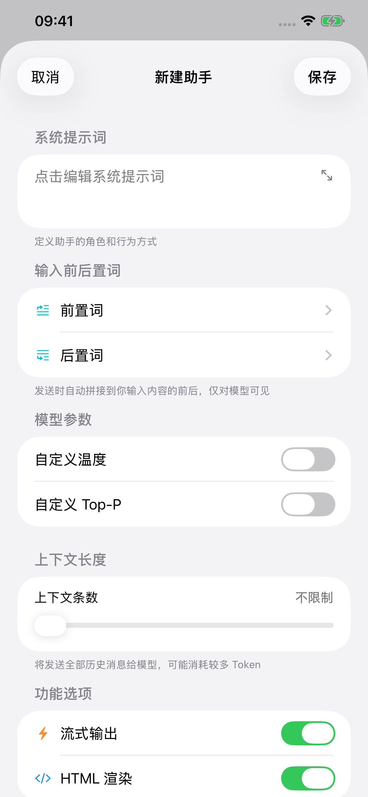

为 iPhone 和 iPad 打造
精致简约的原生 AI 客户端
接入自己的 API，使用你喜欢的模型和助手。 熟悉的 iOS 设计，简单、细致的对话体验。
在 App Store 下载需自备 API 密钥
精致设计 原生体验
圆润的对话气泡、通透的玻璃质感，配合细腻的流式动画与触感反馈。常用操作放在顺手的位置，界面保持简洁。
常用选项 就在输入框旁
选择模型、调整思考档位、开启联网，集中在同一处。无需离开当前对话。

DDchat 实际界面局部
iOS 原生界面与系统菜单
思考内容实时预览、展开阅读
切换助手继续生成，完成后提醒未读

自定义 API 自动识别模型
选择预设服务商，或填入自己的 API 地址和密钥，自动获取模型列表。DDchat 会识别模型的思考、图片理解和工具能力，匹配对应选项。
支持官方 API、兼容接口和第三方中转站。需要时，也可以手动添加模型、调整能力设置。
支持 Chat Completions、Responses 和 Anthropic 协议。具体能力以所选模型与服务商为准。
HTML 标签 直接呈现在对话里
回复中的 HTML 标签可以直接渲染为折叠面板、表格、列表和卡片，与正文一起显示在消息中。
完整 HTML 网页也能预览与分享。支持公式、流程图、Markdown 排版，以及代码高亮与复制。
上午看展，下午逛书店。时间安排在这里：
周六的安排
| 10:00 | 去美术馆看展 |
|---|---|
| 12:00 | 在附近吃午饭 |
| 14:00 | 逛书店，喝杯咖啡 |
出门前记得确认展览的开放时间。
点按“周六的安排”，展开或收起内容。
多个助手 各有自己的设定
写作、编程，或是一个有自己性格的角色。启用助手工具后，一句话即可让 AI 创建助手，或优化已有助手的提示词与配置。每个助手单独保存对话记录。
- 系统提示词
- 设定助手的角色、语气和回复要求。长提示词也有专门的编辑空间。
- 前置词与后置词
- 发送消息时自动带上常用要求，支持多条排序和单独开关。
调好的提示词和参数，还可以打包分享。


隐私至上
对话记录与助手配置，保存在你的设备上。 消息直接发送给你选择的服务商，不经过 DDchat 服务器。
使用模型或联网功能时，相关内容由对应服务商处理，适用其隐私政策。
下载后就能直接聊天吗？
需要先添加服务商的 API 地址和密钥，再选择模型。DDchat 不包含 AI 服务，模型使用费用由你选择的服务商收取。
可以接入哪些服务？
支持 Chat Completions、Responses 和 Anthropic 三种协议，可连接相应的官方 API、兼容服务和中转站，也支持自定义请求头。模型列表可以自动获取或手动添加。
支持哪些设备？
支持 iPhone 和 iPad，需要 iOS 26.0 或 iPadOS 26.0 及以上版本。应用内提供简体中文、繁體中文、English、日本語和 한국어。
支持联网搜索和图片理解吗？
支持。可以发送多张图片，也可以让模型搜索、读取网页并在回答中标注来源。具体能力取决于所选模型和服务商，联网搜索也可单独配置搜索服务。